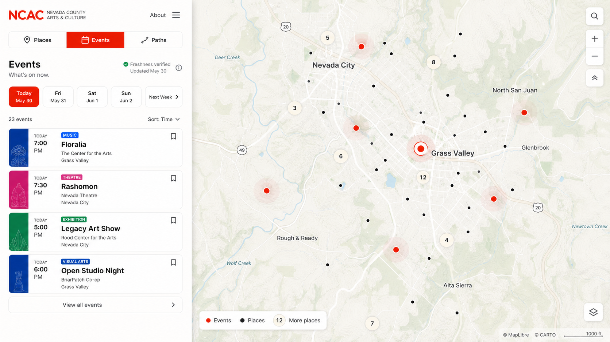
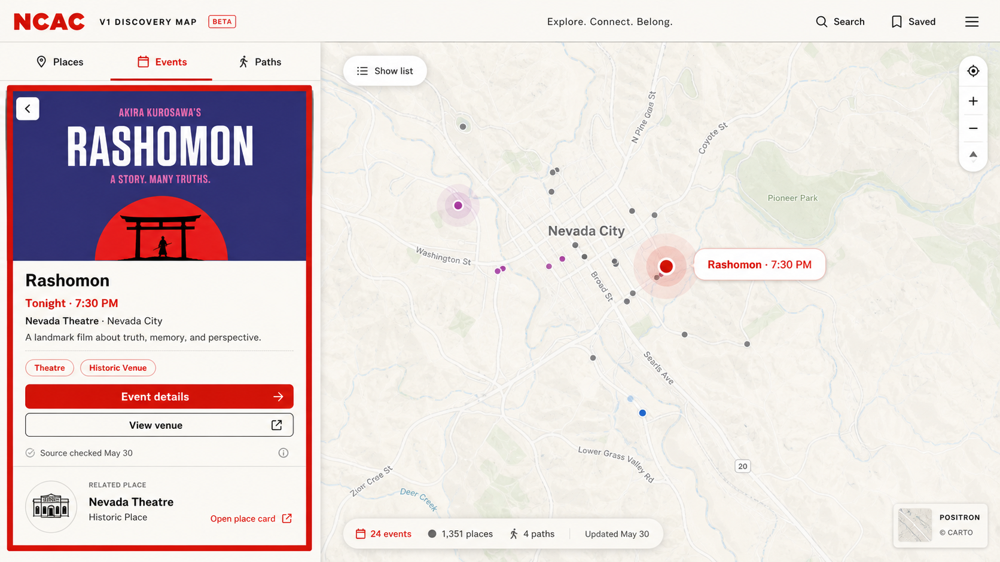
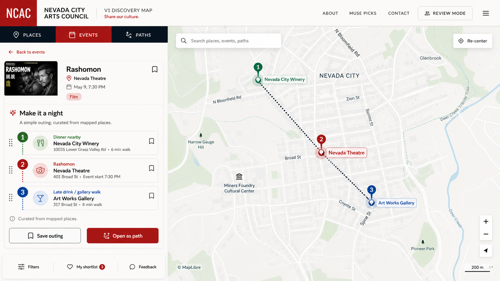
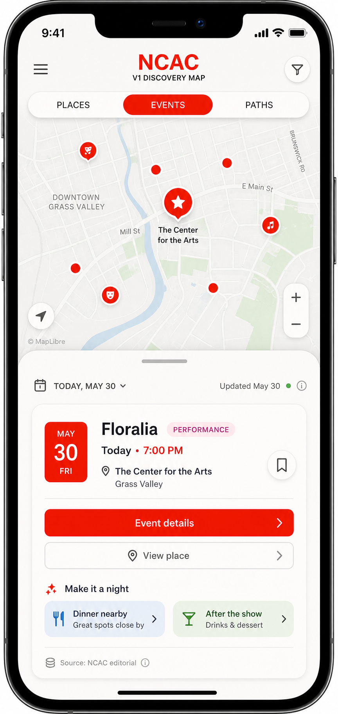
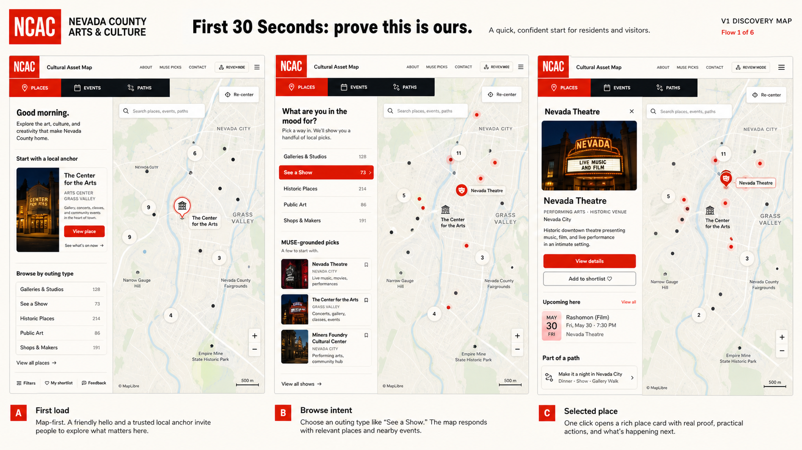
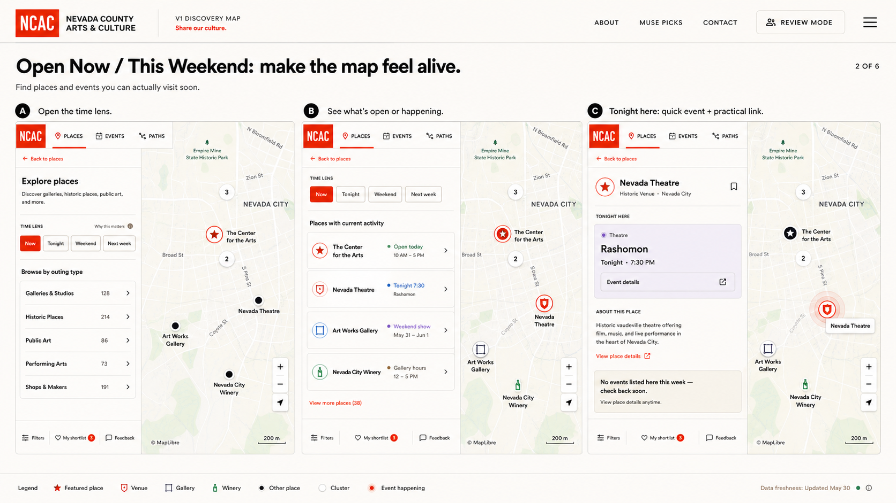
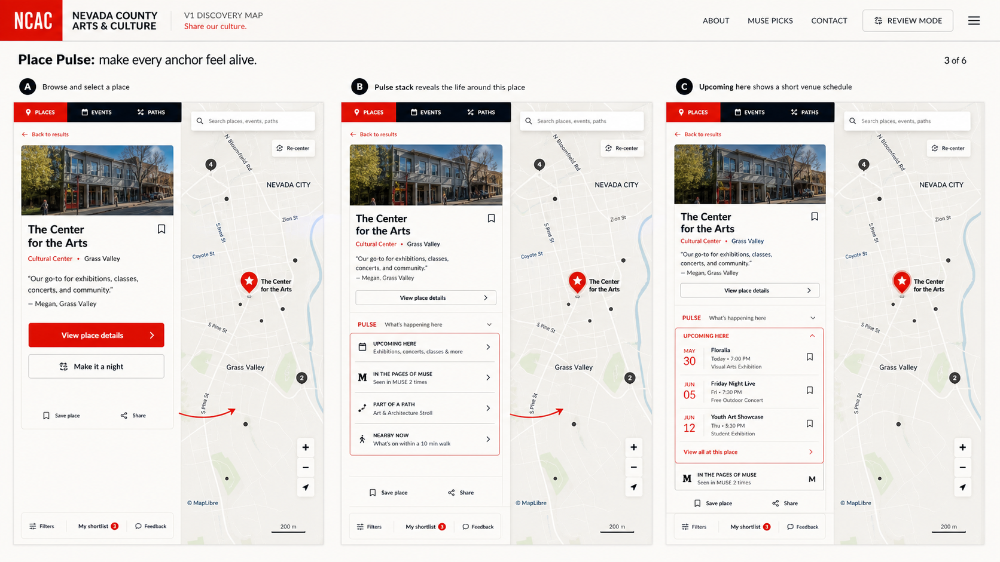
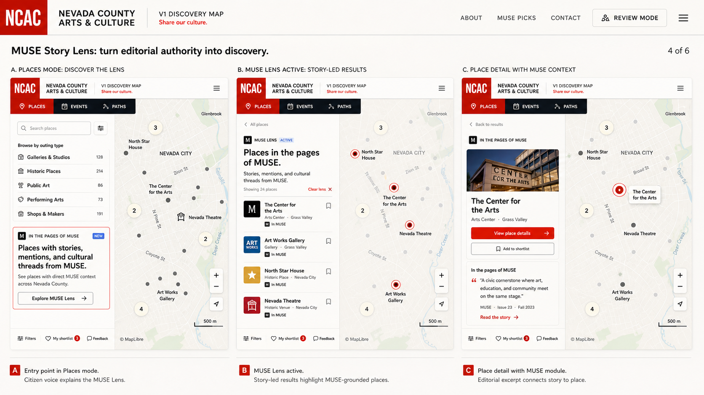
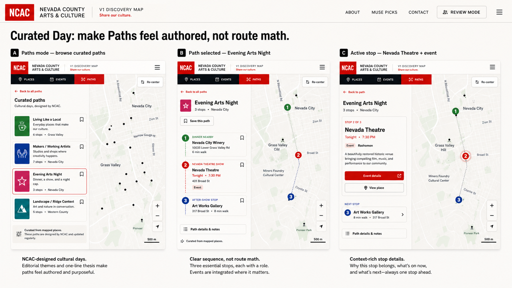
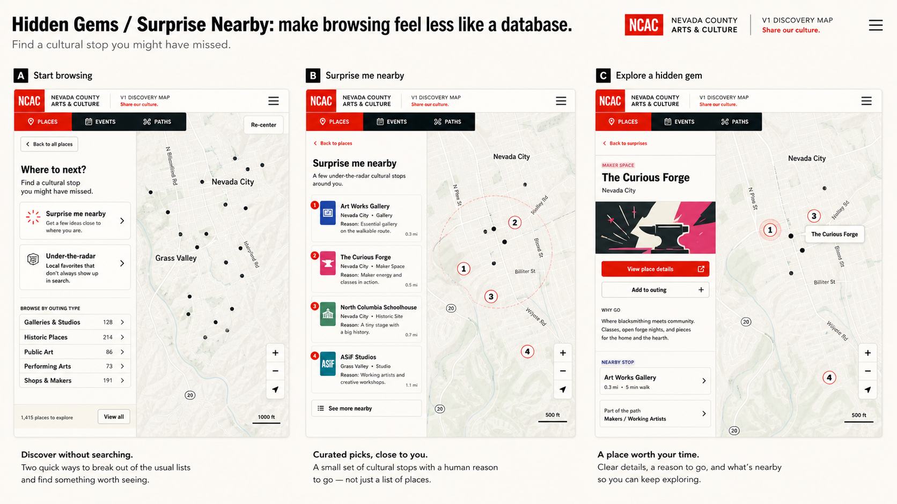

Fresh Events Mode
Date lens, current event list, visible event markers, and a freshness/source signal.

Nevada County Arts & Culture · V1 Discovery Map
Concept targets for how the current map-first prototype could feel more alive without turning into a new site. These are not implementation specs. They are visual prompts for deciding what gaps are worth closing.
The Events target is a living layer, not a full calendar product: current events only, attached to visible places, with clear paths from event to venue and from event to a small curated outing.
Date lens, current event list, visible event markers, and a freshness/source signal.

Event detail connects directly to the venue/place, so calendar content belongs to the map.

A small curated outing around an event, reusing the Paths mental model instead of inventing trip planning.

Same promise on mobile: map visible, drawer focused, event actions practical.

These boards cover the other gaps: first-click confidence, now-ness, place vitality, MUSE as an editorial lens, authored cultural days, and serendipitous browsing.
First load, outing intent, and selected place should make Eliza and Diane feel the product is NCAC-owned immediately.

A time lens makes the map feel alive while staying lighter than a calendar app.

Selected places become the connective surface for upcoming events, MUSE, paths, and nearby context.

MUSE becomes a story-led discovery lens, not just a badge or proof ledger.

Paths feel authored and culturally intentional, with events/place context folded into the route.

Browsing gets a small dose of serendipity without becoming an algorithmic recommendation product.
